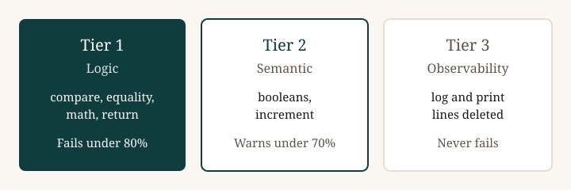
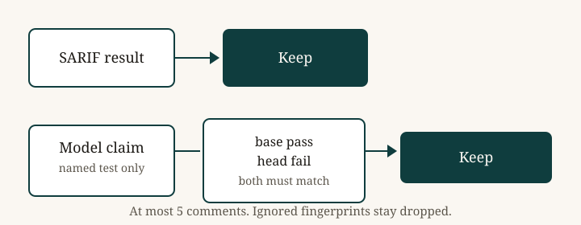
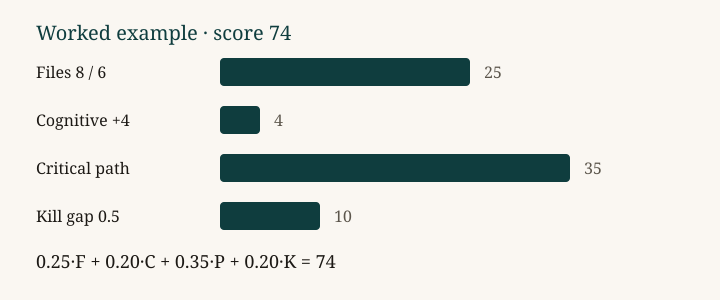

Gates
Scope
The diff may not touch more files than max_files or more churn than max_loc_delta. Churn is added lines plus deleted lines, so a rewrite cannot hide as a net of zero. Paths must match an allow glob and must miss every deny glob. For a bugfix, when formatting and rename lines exceed max_nonfunctional_churn_pct (default 15), the check fails.
Introducing .proofsieve when the base commit has no lock is allowed, so a repository can adopt ProofSieve. After that, editing policy paths requires a valid human attestation. The hook still denies those writes to the agent.
Locked tests must keep their SHA-256. Deleting a test, adding a skip marker, or dropping assertion lines fails unless the lock explicitly allows that change.
Complexity
Caps apply only to added or modified functions: cognitive complexity at most 10, nesting at most 4, and at most 50 lines, unless policy sets other positive limits. Python, TypeScript, JavaScript, and Go are analyzed in process. Java, Kotlin, and Rust are recognized and fail closed as unparsed. A language that policy does not list fails the language rule.
Mutation

Mutants are generated only on changed lines of non-test sources. Tier 1 flips comparisons, equality, arithmetic, and returns. Tier 2 flips booleans and increments. Tier 3 deletes log lines and never fails the build. The worktree is copied; the user's files are not edited. A timeout counts as a kill. No tier-1 mutants is a warning. Tier 2 below its threshold is a warning.
Review

SARIF 2.1.0 results are already proved. Claims in .proofsieve/review.json are kept only when expect.base and expect.head match a real run of test_command plus the test name. Test names that contain newlines or shell metacharacters are rejected. At most max_inline_comments findings are kept (1 to 5). Fingerprints listed in the ignore registry are dropped.
Ownership

Risk is round(100 * (0.25*F + 0.20*C + 0.35*P + 0.20*K)), capped at 100. F is files over the file budget, C is added cognitive complexity over 20, P is 1 when a critical path changed, and K is the mutation gap. The weights are fixed. An example of 8 files against a budget of 6, cognitive +4, a critical path, and a kill ratio of 0.5 scores 74.
Every check report includes a behavioral diff: functions added, removed, or signature-changed, calls inside those functions, and other functions in the repo that call them. Calls in sensitive_calls are marked. The default list is eval, exec, system, Popen, RemoveAll, Query, fetch, and subprocess. The spec path from the lock is included. The summary comes from the parser, not from a model.
Attestation must name the head SHA, a requirement id that appears in the spec, an invariant and a failure mode of at least 10 characters, and a test name that exists in the tree and is not skipped. With require_diff_quiz: true, the comment also sets branch to a changed function that contains a conditional and call to a callee inside a changed function. A wrong name fails the ownership gate. The quiz adds nothing when the diff has neither a conditional nor a call.